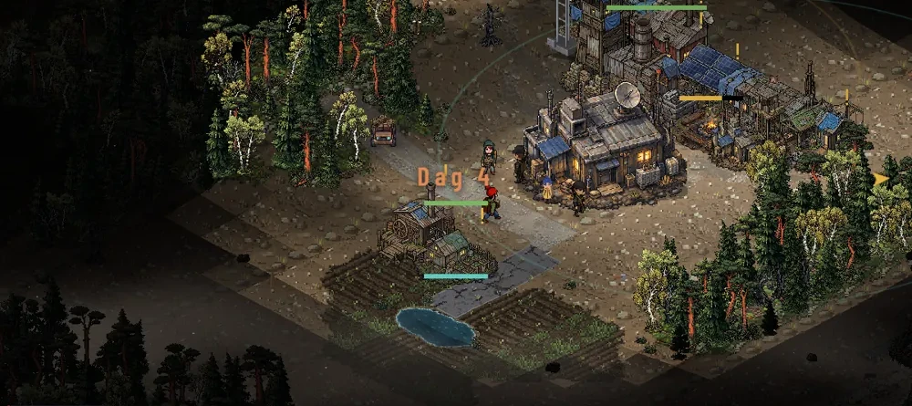

Devlog
Vad som händer i Askfält, version för version. Spelet utvecklas i korta steg och varje version släpps i webbversionen så snart den är testad.
-
Dynamisk hotbild går vidare till slutkontroller
Anfall som följer tid och kolonins utveckling har införts i utvecklingsbygget. Mark och luft kan samordnas, och panelen Nätets tryck förklarar nivån utan att avslöja dolda mål eller exakta attacktider. Uppdrag bevaras vid laddning och gamla observationer kan leda fel. Slutkontroller och balansjämförelser pågår; uppdateringen är ännu inte släppt.
-
Nätets underrättelser redo för nästa uppdatering
Nätets enheter väljer mål utifrån mottagna observationer, och gamla positioner kan vara inaktuella. Spaningsdrönare måste överföra sina privata paket; torn, luftskydd och EMP kan stoppa dem. Kartlagret, sparningen och slutkontrollerna är klara. Även menyns gnistor följer nu eldstaden efter rotation. Uppdateringen är ännu inte släppt; senaste släppta versionen är v2.3.
-
Försvar och strid redo för nästa uppdatering
Försvarslinjer och portar, vuxnas självförsvar och vakttorn mot lätta drönare är nu implementerade. Striden får tydligare kulspår, träffar och drönarutfall, och pågående anfall bevaras när spelet laddas. Kontrollerna av strid, sparning och mobilvy är klara. Uppdateringen är ännu inte släppt; senaste släppta versionen är v2.3.
-
Tydligare territorium och expansion
Kartvyn för v2.4 har klarat testerna och är redo för release. Den ska visa kolonins gräns, vad som utvidgar den och var försvar saknas. Yta, omkrets och tydliga symboler ska göra expansionens möjligheter och utsatta kanter lättare att förstå. Uppdateringen är ännu inte släppt; senaste släppta versionen är fortfarande v2.3.
-
iPhone-appen testas i TestFlight
Askfält finns nu som app för iPhone och iPad i Apples testprogram TestFlight – senast med version 2.3. Det är samma spel som på webben, paketerat så att allt finns i telefonen och fungerar utan uppkoppling. De första byggena testas internt på riktiga telefoner: grafik, touch, ljud, sparning och återupptagning.
- Ljudet startar när du släpper fingret efter första trycket och hörs även när ringknappen står på ljudlöst.
- Målet är App Store den 1 november 2026 – med reservation för testning och Apples granskning.
-
Vägar och logistik 2.0
- Rita en väg med start, mål och upp till två vägpunkter, se priset innan du beställer och uppgradera valda sträckor direkt från kartan.
- Ny Logistik-vy: trafik, väntande varor, lastvagnarnas last och körvägar och varför något står still.
- Vägbyggen delar bärarna med vanliga leveranser, även när kolonin bara har en ledig bärare.
- Bärarna hämtar från det närmaste huset som har varan, i stället för från det som byggdes först.
- Dubbelt så långa dygn – fyra minuter i stället för två – så det hinns mer mellan nätterna. Vill du ha det gamla tempot väljer du Dygnets längd: Kort under Inställningar.
-
Stabil grund och återstartbar ekonomi
- Ekonomin kan startas om även om sista vedlägret eller verkstaden försvunnit – en ledig vuxen i bunkern kan långsamt samla och göra delar för hand.
- Laddningsvy när du startar, tydligare felmeddelanden och ett tältläger vid territoriets kant för överlevare som väntar på sängar.
- Bättre läsbarhet på små skärmar, tydligare kampanjtexter och dygnsrapporter som går att stänga av.
- Ljudet startar säkrare på iPhone, och spelet fungerar även i webbläsare utan WebGL med en enklare reservgrafik.
-
Berättelsen och bansidorna i ny grafik
- Berättelsen har fem nya bilder i isometrisk pixelkonst – från serverhallen där Nätet vaknade till kolonin som växer.
- Varje kampanjbana har en egen bild, och hjälpen visar byggnaderna som de ser ut på kartan.
- Tältläger för grupper som väntar på sängar och en ny appikon.
-
Hela kartan i isometrisk pixelkonst
Grusvägar, asfalt med sprickor och upptrampade stigar. Bärarna bär ett surrat paket framför sig och lastvagnarna kör med paketen staplade på flaket.
-
Isometrisk vy och ny grafik
- Kartan visas snett uppifrån. Alla byggnader, ruiner, skog, mark och folk är omgjorda i pixelkonst.
- Arbetarna klär sig efter yrket, byggplatser har ställningar och odlingsfälten växer i tre steg.
- Ny startskärm och meny.
-
Djupare ekonomi
Plantskola och skog som växer igen, odlingsfält, målmängder i lagret, produktivitet per byggnad och erfarenhet som gör arbetarna snabbare.
-
Kullar, dalar och levande skog
Höjdskillnader på kartan, svensk natur i dubbel upplösning, träd som faller och lämnar stubbar och stigar som följer gångriktningen. Vägar gör folk och robotar snabbare.
-
Andra akten
Fyra nya kampanjbanor – Askmolnet, Slaggkullen, Alliansen och Nätets kärna – vaktrobotar och delbara kartkoder. Den installerade appen frågar när en ny version finns.
-
Vind, vägar och ljud
Vind och stormar, naturlig rörelse, samhällen i ruinerna, vägar som bärarna bygger, kantmurar, vindkraft och batterier – och musik i lager som följer dag, natt och hot.
-
Första versionen
Askfält blir en installerbar webbapp som fungerar offline, med kampanj, fritt spel och tre sparplatser. Före det: version 0.1–0.19 med produktionskedjor, kampanjen, natt och vila, moral, handel och den nya renderaren.
Senast uppdaterad 14 oktober 2026 · spelets senaste släppta version: 2.3.